css选择器(注意所有选择器都分为基础语法[就是单独使用不搭配别的选择器，相当于全局匹配]和精准匹配语法[就是规定作用于某个地方])
基本选择器:
目录——基本选择器全局选择器
目录——基本选择器-
可以与任何元素匹配，优先级最低，一般做样式初始化
*{ margin:0; padding:0; }
元素选择器
目录——基本选择器- 元素选择器:
HTML文档中的元素，p、b、div、lmg、body等标签
标签选择器，选择的是页面上所有类型的标签，所以经常描述"共性",无法描述某一个元素的"个性"p{ fong-size：25px; color：blue; }还可以应用行内元素span单独给某一部分添加样式
例句：<p>学完前端，继续学python</p> 任务：在例句文本中，单独给“前端”二字添加样式 代码：<p>学完<span>前端</span>，继续学python</p> 样式：span{ font-size:30px; color:blue; }实现效果：先学前端，在学python
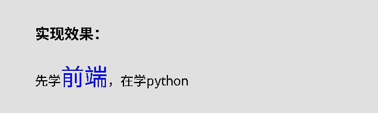注意：
- 所有的标签，都可以是选择器
- 无论这个标签藏的多深，一定能够被选上
- 选的是所有，而不是单指一个
类选择器
目录——基本选择器-
规定用圆点[.]来定义，针对想要的所有标签使用
优点灵活样式：.oneclass{ width:800px; } 内容：<p class="oneclass">hello</p>类选择器演示hello
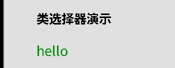class属性的特点
- 类选择器可以被多种标签使用
- 类名不能以数字开头
- 同一个标签可以多次使用多个类选择器，用空格隔开
ID选择器
目录——基本选择器- ID选择器
- 定义：1.针对某一特定的标签来使用，只能使用一次。
2.css中的ID选择器以【#】号来定义。3.在使用时以[id="id名"] -
列如：
<style> #mytitle{ border:1px solid red; } </style> <hr id="mytitle"> - ID选择器演示：
- 在标签内添加id选择器标准语法： 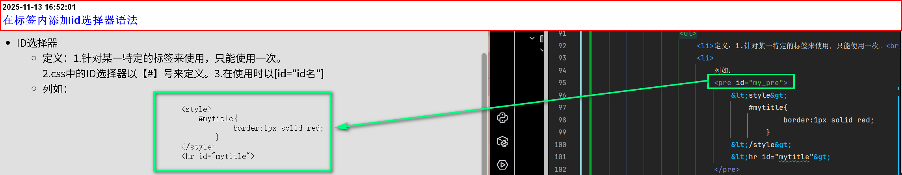
- 使用所创建的id名，添加样式：

-
总结：
- 其作用与类选择器一致，都是通过命名的方式，然后单独添加样式
- 不同的是：
- 前缀不一样，类选择器以[.]开头，引用的时候使用class属性
- id选择器以#开头，引用的时候使用id属性
- id选择器不能以数字开头
- 最重要的是：每个类选择器可以无限引用，但每个id选择器只能引用一次(id选择器可以多次出现，但每个id只能引用一次)
- 特别注意：多次引用id选择器并不会报错，样式也会生效，但是规定了每个id选择器只能使用一次
- 定义：1.针对某一特定的标签来使用，只能使用一次。
组合(复合选择器也可以叫关系选择器)：
目录——关系选择器合并选择器
目录——关系选择器- 合并选择器：
- 定义：以[,(英文)]连接(元素选择器、类选择器、id选择器)在一起，所设置的样式均生效
- 作用：提取共同的样式，减少重复代码
- 语法：选择器1,选择器2，…………{}
- 演示：
- 素材图片准备：
单元格 单元格 单元格 单元格 单元格 单元格 单元格 单元格 单元格 我是一个p标签
我是一个span标签 - 素材图片： 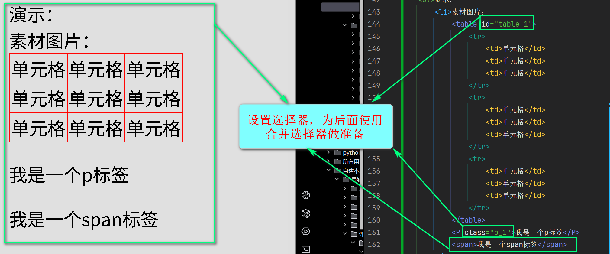
- 使用合并选择器并添加样式： 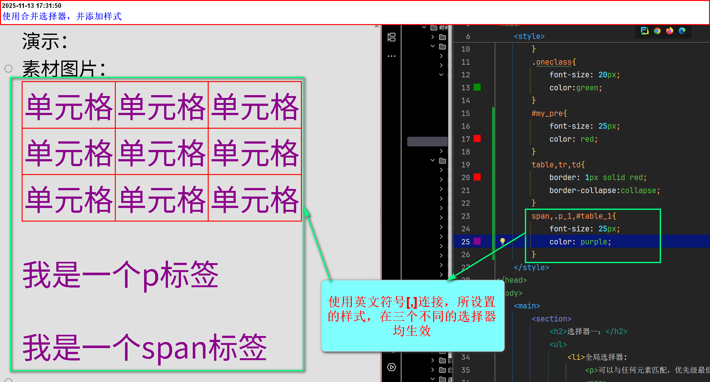
- 总结：
- 使用英文符号[,]连接，所设置的样式，在三个不同的选择器均生效，这样可以极大的减小代码的重复量
- 它可以将不同的选择器连接起来
后代选择器
目录——关系选择器- 定义：选择所有被E元素包含的F元素，中间用空格隔开
- 语法：E F{};
- 演示素材：
- 无序列表1
- 有序列表1
- 有序列表2
- 无序列表2
- 有序列表3
- 有序列表4
- 无序列表1
-
- 演示素材图片： 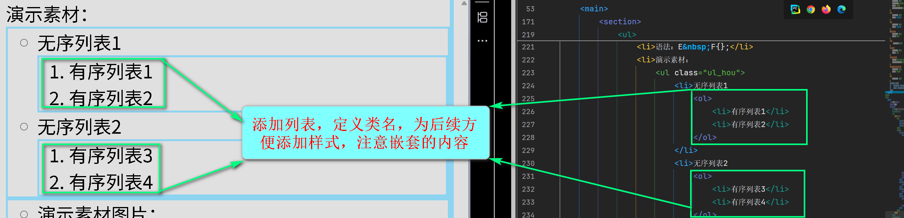
- 使用后代选择器添加样式，注意嵌套部分。 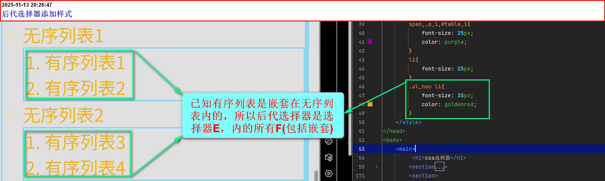
- 注意：
由图可知有序列表是嵌套在无序列表内的，所以后代选择器是选择器E，内的所有F(包括嵌套)
子选择器
目录——关系选择器- 定义：选择所有作为F元素的直接子元素，对嵌套的元素不起作用，用[>]连接
- 语法：E>F{}
<div> <span>子元素1</span> <p><span>孙元素</span></p> <span>子元素2</span> </div> 样式： div>span{ color：red; } - 子选择器素材准备：
这是第一个段落
这是第一行
这是第二行这是第二个段落
这是第一行
这是第二行 - 演示：
- 继承问题：
•发现一个问题，有些声明会被继承(color、font-size…………),
这导致我引用后代选择器的有序列表和无序列表素材 的时候，使用子选择器的时候,连嵌套的有序列表内的li标签也被添加了样式，
子选择器一般是只会选择父元素内直接子元素，不包括孙子的。被继承时的样子： 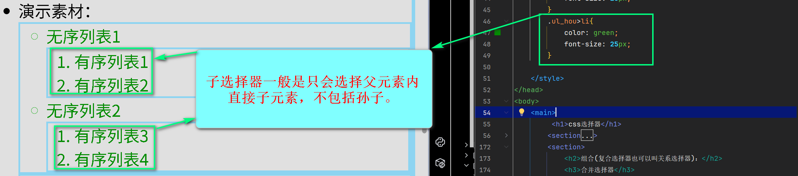 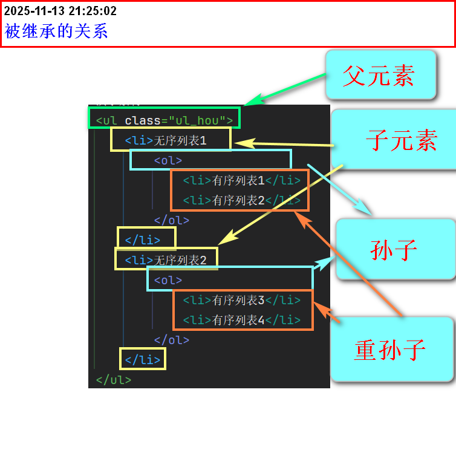
解决办法，后续使用属性值：initial,强制将该内容重置： 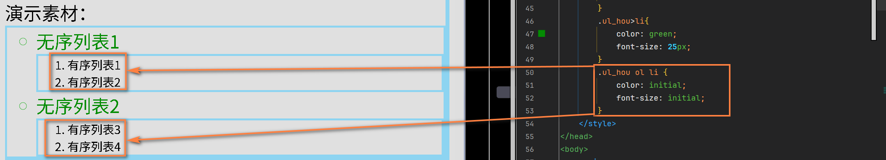
- 继承是一个很常见的问题，唯一的办法就是(重置为默认形式——initial)
子选择器演示：我是直接子元素
-
我是嵌套的p标签
- 子选择器素材： 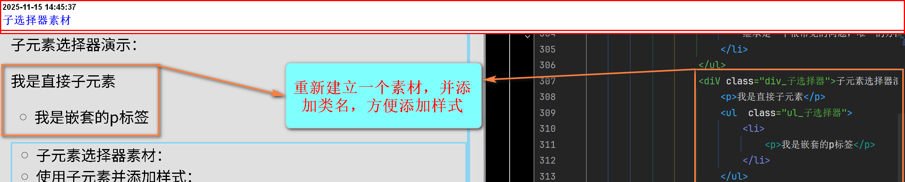
- 使用子元素并添加样式： 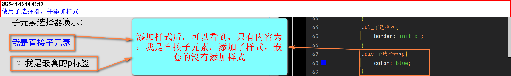
- 总结：
1.由图可知： 添加样式后，可以看到，只有内容为：我是直接子元素。添加了样式，嵌套的没有添加样式
2.所有子元素选择器在不被继承的情况下，只为直接子元素添加样式(就是不包含嵌套内的)
- 继承问题：
相邻兄都选择器
目录——关系选择器- 定义:选择器跟紧E元素后的F元素，用加号(+)表示，选择相邻的第一个兄弟元素
- 语法：E+F{}
<h1>h1元素</h1> <p>第一个元素</p> <p>第二个元素</p> 样式： h1+p{ color:red; } - 演示：
- 素材准备：
第一个元素
第二个元素
第三个元素
- 相邻选择器素材： 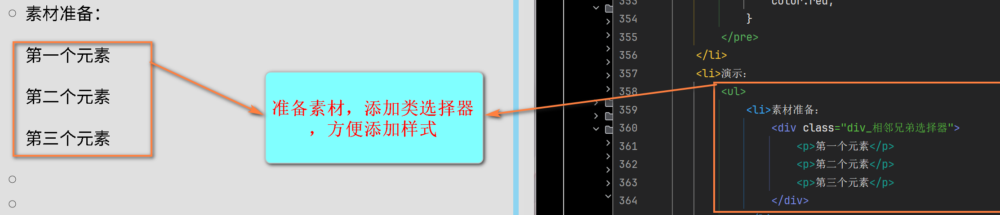
- 使用相邻选择器，为第三个元素添加样式： 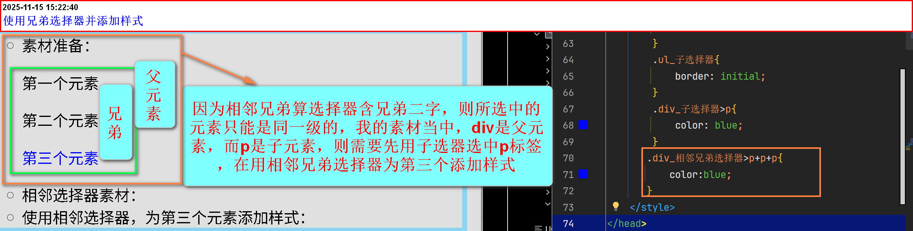
- 总结：
- 相邻兄弟选择器 只能选择直接兄弟元素，不能选择嵌套在其他元素内的元素
- CSS是支持连续使用+号,但不推荐，后续可以使用伪类选择器替代
- 素材准备：
通用兄弟选择器
目录——关系选择器- 定义：选择E元素之后的所有兄弟元素F，作用于多个元素，用~隔开
- 语法：E~F{}
<h1>h1元素</h1> <p>第一个元素</p> <p>第二个元素</p> 样式： h1~p{ color:red; } - 演示：
- 素材准备：
我是p标签
我是p的子元素我是标签div我是p标签
我是p的子元素我是标签div我是p标签
我是p的子元素我是标签div我是标签div我是p标签
我是p的子元素我是标签div我是p标签
我是p的子元素 - 通用兄弟选择器素材图片：

- 使用通用兄弟选择器并添加样式：

- 子选择器和通用选择器区别:
CSS选择器对比：通用兄弟选择器（~）和子选择器（>）
通用兄弟选择器（~）
- 定义：选择某个元素之后的所有兄弟元素。
- 语法：
E ~ F，其中E是参考元素，F是E之后的所有兄弟元素。 - 作用范围：选择
E之后的所有兄弟元素，无论它们的类型。 - 动态性：如果兄弟元素的数量或顺序发生变化，选择器仍然有效。
- 代码量：可以一次性选择多个兄弟元素，减少代码量。
- 继承问题：可能会导致子元素继承样式，需要额外处理。
- 适用场景：
- 动态内容，兄弟元素的数量或顺序可能变化。
- 批量样式，需要对多个兄弟元素应用相同样式。
- 指定起始点，从某个特定元素开始选择其后的所有兄弟元素。
子选择器（>）
- 定义：选择某个父元素的直接子元素。
- 语法：
E > F，其中E是父元素，F是E的直接子元素。 - 作用范围：仅选择
E的直接子元素，不包括嵌套的子元素。 - 动态性：如果子元素的结构发生变化，选择器可能需要调整。
- 代码量：需要逐个指定每个子元素，可能会增加代码量。
- 继承问题：不会影响嵌套的子元素，避免了继承问题。
- 适用场景：
- 精确控制，需要精确选择直接子元素。
- 避免嵌套影响，需要避免嵌套元素继承样式。
- 简单直接，需要对直接子元素应用样式。
- 素材准备：
伪类选择器——用户行为选择器
用户行为伪类解释
目录——用户行为伪类- 定义:属于类选择器中的一种，根据特定状态选取元素
- 基本语法：selector:鼠标行为{}
- (其中selector为其他选择器)
特点： 单冒号，主要用于鼠标行为(单击、按住、划过……)
用户行为伪类：link
目录——用户行为伪类- 鼠标点击前：
语法：selector:link{}(就是其他选择器+单冒号+link链接)
鼠标点击前演示 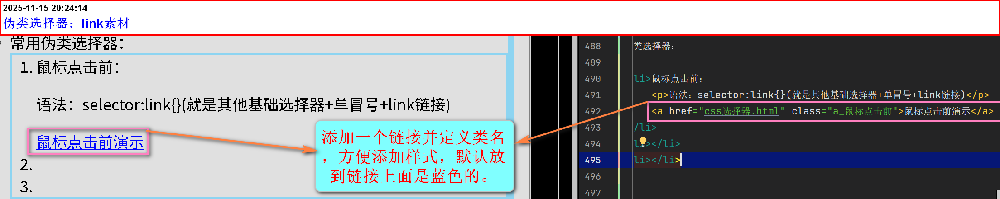 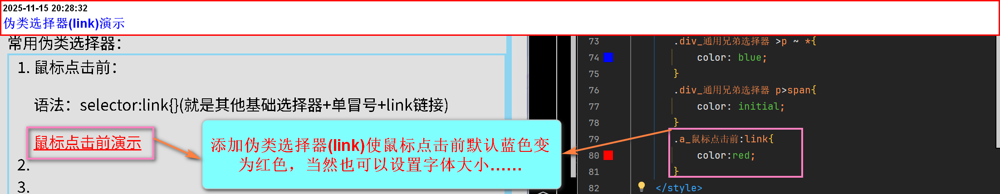
用户行为伪类：visited
目录——用户行为伪类- 鼠标点击后：
语法：selector：visited{}(就是其他选择器+单冒号+visited链接)
鼠标点击后演示 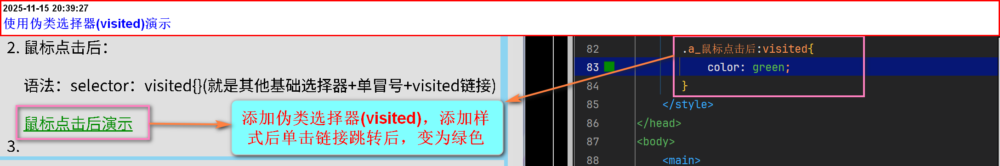
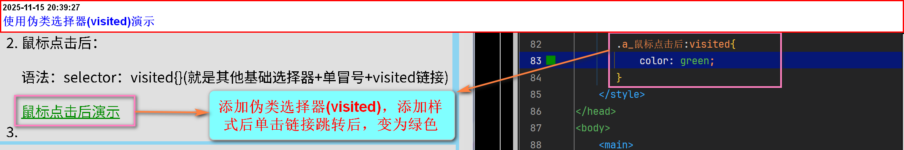
用户行为伪类：hover
目录——用户行为伪类- 鼠标悬停时(划过)：
语法：selector:hover{}(就是其他选择器+单冒号+hover链接)
鼠标悬停时的效果演示 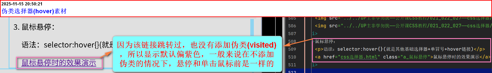 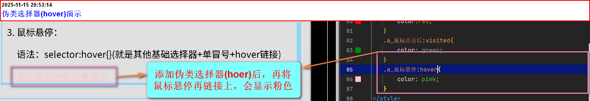
用户行为伪类：active
目录——用户行为伪类- 鼠标点击时(按住不松手)
语法：selector:active{}(就是其他选择器+单冒号+active链接)
鼠标点击时演示 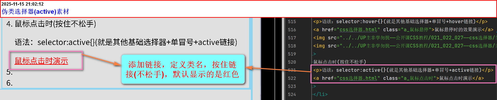 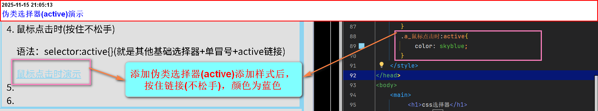
用户行为伪类注意事项以及非链接使用用户行为伪类
目录——用户行为伪类>- 注意：
- 冒号和后面的鼠标行为，没有任何空格，必须连接在一起
- 四个伪类选择器必须按照以上介绍的顺序书写(:link、:visited、:hover、:active),否则在浏览器中部分样式不能实现
- 伪类选择器全部一起使用的情况，主要是应用在超链接上，偶尔也会独立使用在其他标签上面
- 伪类选择器也可以应用在其他元素上，但是只能实现active激活瞬间和hover鼠标悬停效果
- 在其他元素使用伪类：
我是一个普通的div标签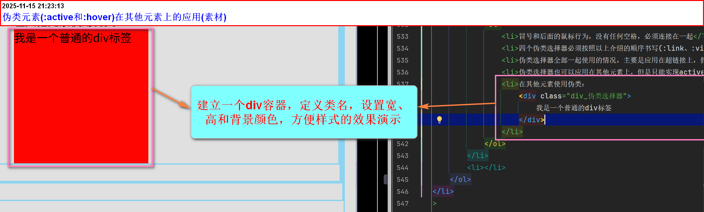 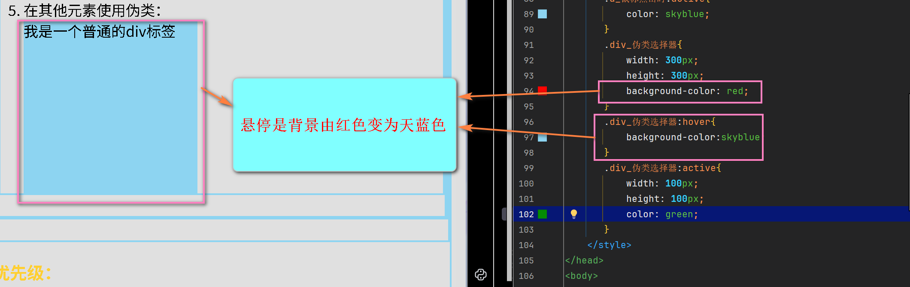 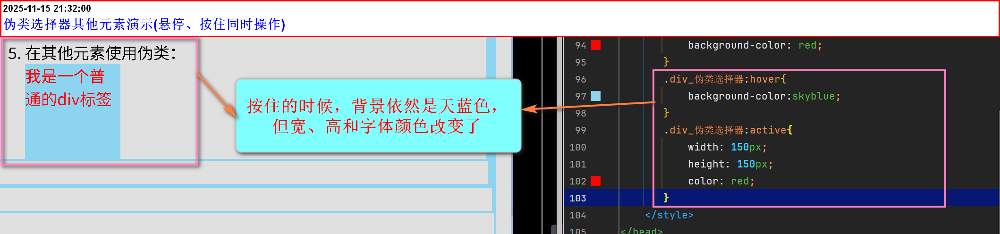
伪类选择器——结构伪类选择器
结构伪类选择器(基于元素在文档树中的位置)——文档树超链接
目录——结构伪类结构伪类选择器(基于元素在文档树中的位置)
- 构建文档树，方便后面添加伪类选择器：
结构伪类——first-child
目录——结构伪类语法：selector:first-child{}(就是其他选择器+单冒号+first-child链接)
定义：选中父元素内第一个子元素添加样式
- 注意：
- 当父元素内的子元素有嵌套的时候，也会选中子元素内的第一个[子元素]
- 当第一个直接子元素有嵌套的时候，则给整个嵌套内的元素添加样式(可以理解为直接给第一子元素单独添加样式[与元素选择器并无区别])
- 若只想选中父元素的第一个直接子元素只需要在伪类前加上子选择器即可
-
文本素材： 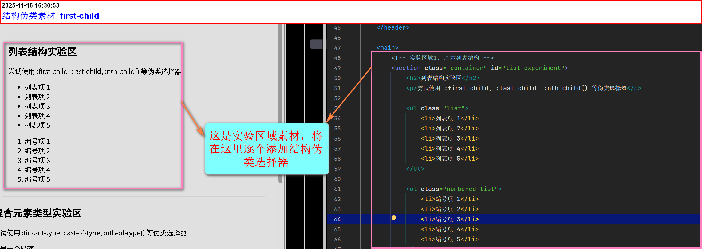使用first-child伪类选择器：
- 注意1内容的演示： 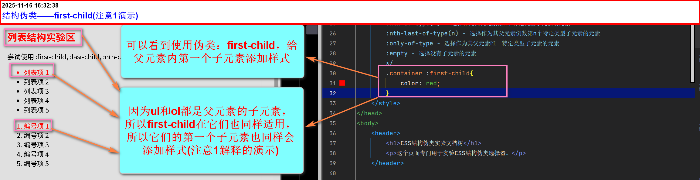
- 若只想给父元素的第一个子元素添加演示，只需要在伪类前添加子选择器： 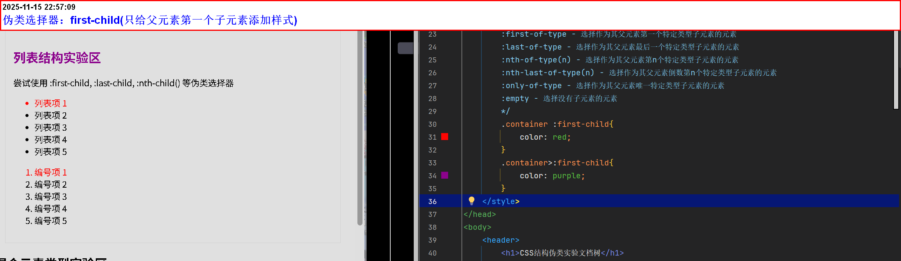
- 注意2内容演示： 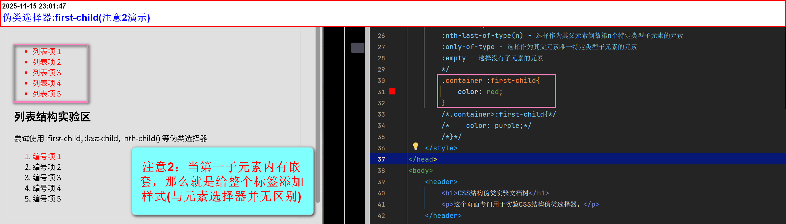
结构伪类——last-child
目录——结构伪类语法：selector:last-child{}(就是其他选择器+单冒号+last-child链接)
定义：选择父元素最后一个子元素添加样式
- 注意：
- 当最后一个直接子元素有嵌套的时候，则给整个嵌套内的元素添加样式(可以理解为直接给最后一个子元素单独添加样式[与元素选择器并无区别])
- 当父元素内的子元素有嵌套的时候，也会选中子元素内的最后一个[子元素]
- 若只想选中父元素的最后一个直接子元素只需要在伪类前加上子选择器即可
-
文本素材(接着first-child一起)： 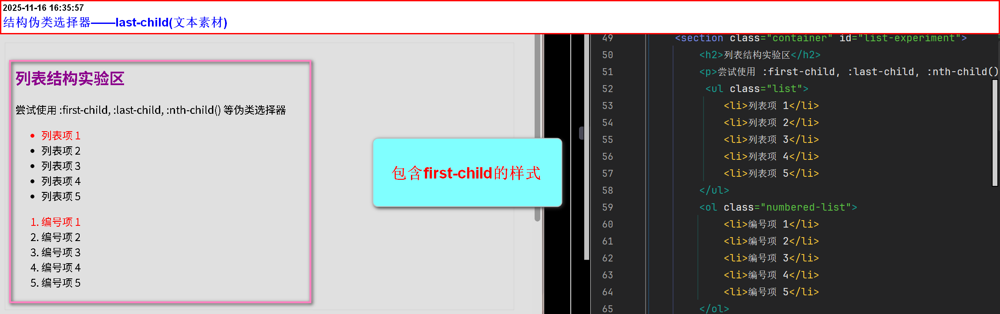使用last-child伪类选择器：
- 注意1演示： 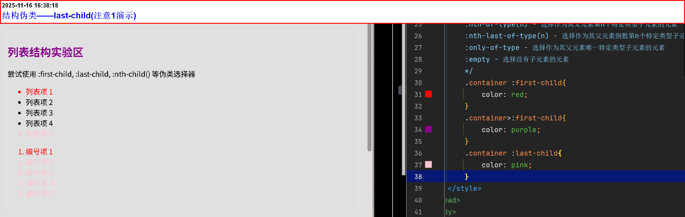
- 注意1的解决办法及注意2演示： 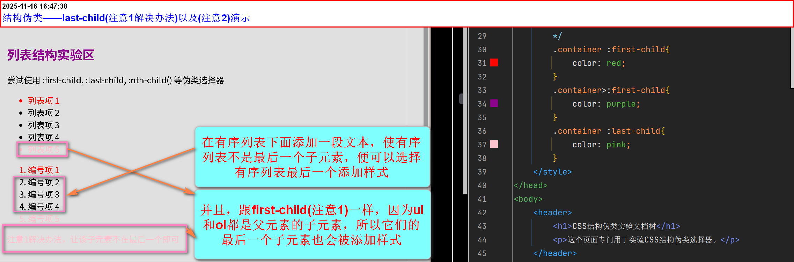
- 只将父元素的最后一个直接子元素添加样式： 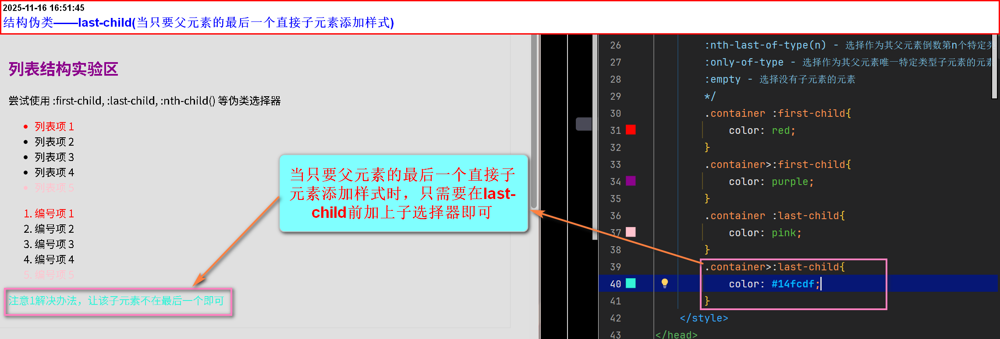
结构伪类——nth-child(n)
目录——结构伪类语法：selector:nth-child(n){}[就是其他选择器+单冒号+nth-child(n)链接]
定义：选择作为其父元素第n个子元素的元素
- 注意：
- n可以是任何正整数
- 也可以是一个表达式：2n(表示偶数个子元素——相当于even)、2n+1(表示奇数个子元素——相当于odd)、n+4(表示第四个开始的所有子元素)
- 不可以是0和负数
-
- 文档素材： 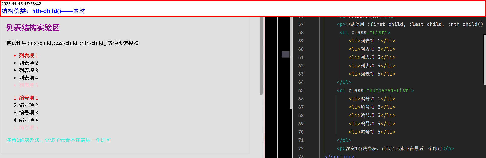
- 注意1演示： 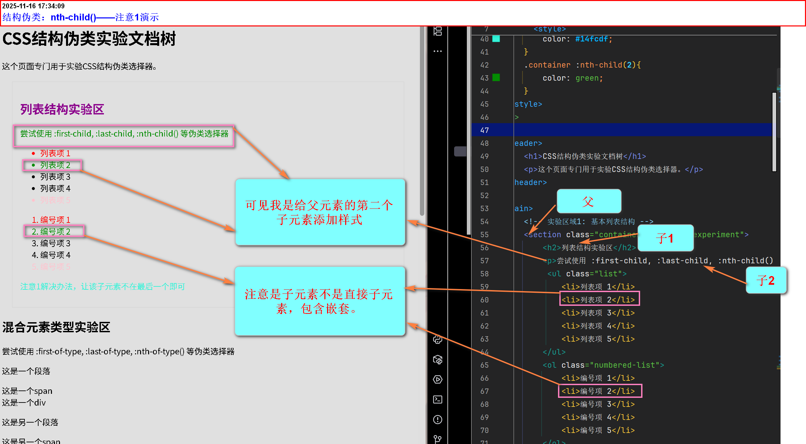
- 注意2演示：
——注意2演示.png)
- 注意3演示： 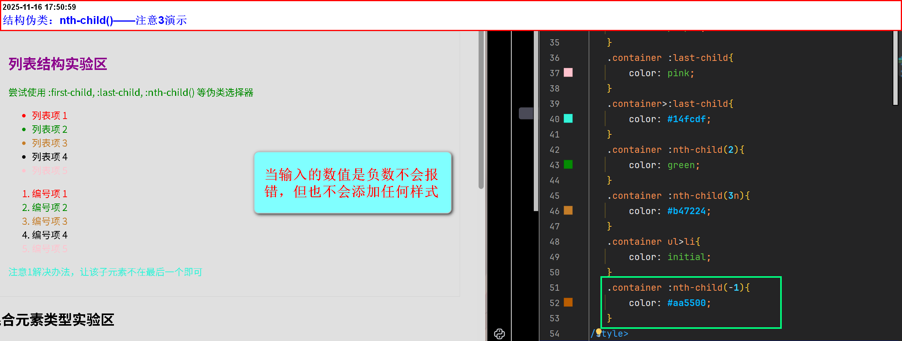
结构伪类——nth-last-child(n)
目录——结构伪类语法：selector：nth-last-child(n){}[就是其他选择器+单冒号+nth-last-child(n)链接]
定义：选择作为其父元素倒数第n个子元素的元素
- 注意：
- n可以是任何正整数(0和负数不行)
- 也可是表达式：2n(表示偶数个子元素——相当于even)、2n+1(表示奇数个子元素——相当于odd)、n+4(表示第四个开始的所有子元素)
结构伪类——only-child
目录——结构伪类语法：selector：only-child{}(就是其他选择器+单冒号+only-child(n)链接)
定义：选择作为其父元素唯一子元素的元素
- 注意：
- 选择的是：父级元素内只嵌套唯一子元素(也就是说当一个块级元素嵌套多个子元素，这个块级元素不会被选中)
- 关于嵌套补充：
块级元素及可以嵌套块级元素也可嵌套内联元素，但是内联元素只可以嵌套内联元素，不能嵌套块级元素
结构伪类：first-of-type
目录——结构伪类语法：container selector:first-of-type{}(就是其他选择器(指定元素所在的容器)+指定的元素+单冒号+first-of-type链接)
定义：选择作为其父元素第一个特定类型子元素的元素
- 注意：
- 语法是：container selector:first-of-type{}，而不是container:fist-of-type(selector){}
- 只是指定被定义元素当中的第一个元素
- 同样是第一个元素，而非是第一个直接子元素
- 演示:
- first-of-type(素材) 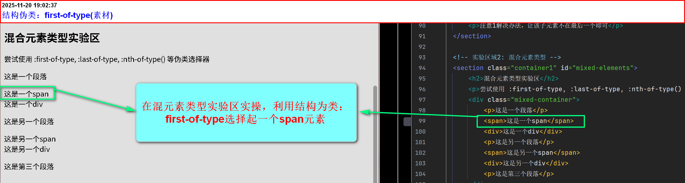
- first-of-type(演示) 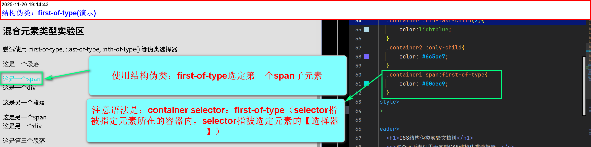
结构伪类last-of-type
目录——结构伪类语法:container selector：last-of-type{}(就是其他选择器(指定元素所在的容器)+指定的元素+单冒号+last-of-type链接)
定义：选择作为其父元素最后一个特定类型子元素的元素
- 注意:
- 语法是：container selector：last-of-type{}，而不是：container:last-of-type(selecto){}
- 只是指定被定义元素当中的最后一个元素
- 同样是最后一个元素，而不是最后一个直接子元素
- 演示：
- 结构伪类：last-of-type(素材) 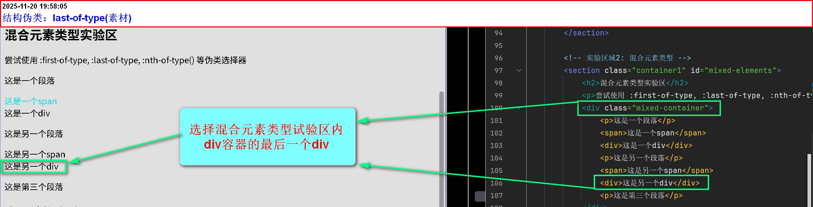
- 结构伪类：last-of-type(演示) 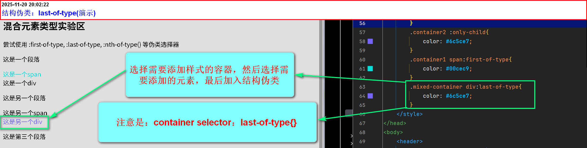
结构伪类：nth-of-type(n)
目录——结构伪类语法：container selector：nth-of-type(n){}[就是其他选择器(指定元素所在的容器)+指定的元素+单冒号+nth-of-type(n)链接)]
定义：选择作为其父元素第n个特定类型子元素的元素
- 注意:
- 语法是:container selector:nth-of-type(){},而不是container:nth-of-type(selector[n])
- n必须是正整数,而非是有理数,所以不能为零和小数
- 该结构伪类是指定:父元素当中,特定类型(如p,div……)的第n个子元素
- 演示：
- 结构伪类：nth-of-type(n)[素材]
![结构伪类：nth-of-type()[素材]](../../UP主非学勿扰——公开课CSS教程/021_022_027——css选择器/素材存放区/伪类选择器/结构行伪类选择器实验树/结构伪类：nth-of-type()/结构伪类：nth-of-type()%5B素材%5D.png)
- 结构伪类：nth-of-type(n)[演示]
![结构伪类：nth-of-type()[演示]](../../UP主非学勿扰——公开课CSS教程/021_022_027——css选择器/素材存放区/伪类选择器/结构行伪类选择器实验树/结构伪类：nth-of-type()/结构伪类：nth-of-type()%5B演示%5D.png)
结构伪类：nth-last-of-type(n)
目录——结构伪类语法：container selector：nth-last-of-type(n){}[就是其他选择器(指定元素所在的容器)+指定的元素+单冒号+nth-last-of-type(n)链接)]
定义：选择作为其父元素倒数第n个特定类型子元素的元素
- 注意:
- 语法是:container selector:nth-last-of-type(){},而不是container:nth-last-of-type(selector[n])
- n必须是正整数,而非是有理数,所以不能为零和小数
- 该结构伪类是指定:父元素当中,特定类型(如p,div……)的倒数第n个子元素
- 演示：
- 结构伪类：nth-last-of-type()素材
/结构伪类：nth-last-of-type()%5B素材%5D.png)
- 结构伪类：nth-last-of-type()演示
/结构伪类：nth-last-of-type()%5B演示%5D.png)
结构伪类：only-of-type
目录——结构伪类语法：container selector：only-of-type
定义：选择作为其父元素唯一特定类型子元素的元素
- 注意：
- 语法是:container selector:only-of-type(){},而不是container:only-of-type(selector))
- 只有当特定子元素是父元素唯一的才生效
- 演示：
- 素材： 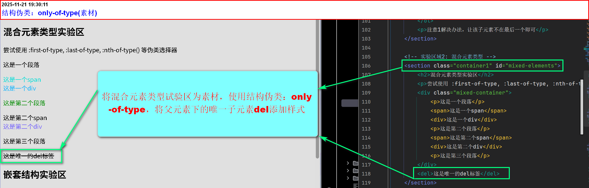
- 演示： 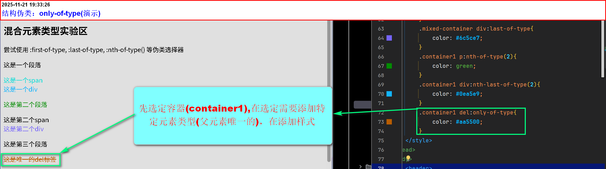
结构伪类：empty
目录——结构伪类语法：container selector:empty
定义：选择没有子元素的元素
- 注意：
- 需要先选中特定的元素，再使用结构伪类：empty
- 工作顺序：先查找指定容器——再查找指定元素——查找指定元素的空元素——添加样式
- 它会为指定元素的所有空元素添加样式，而不是单指一个
- 演示：
- 素材： 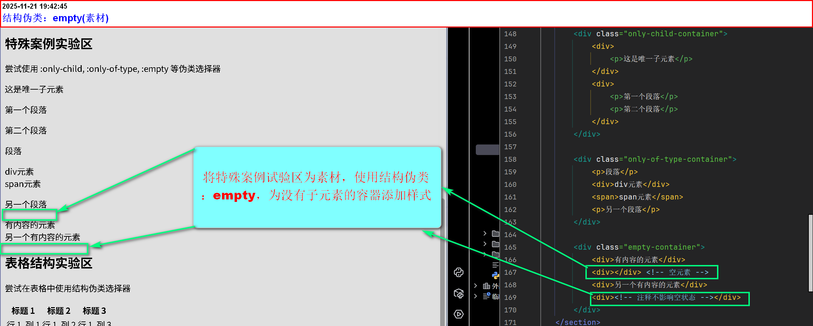
- 演示： 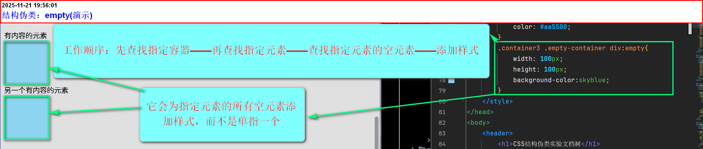
用户行为伪类选择器补充
用户行为伪类：focus
目录——用户行为伪类>语法：selector：focus{}
定义：元素获得焦点时生效
- 注意：
- 该用户行为伪类主要作用于表单(form)
- 主要作用是，当表单内的控件被焦点时的效果
- 焦点:提示当前正在需要操作的部分(就是眼睛看到的被高亮显示的控件【当前没有做任何其他的操作】)
focus与selector区别
目录——其他知识补充| 对比维度 | 焦点(focus) | 选中(selector) |
| 核心定义 | 标记【当前要操作的元素】——明确"接下来操作对象" | 标记【元素内被选定的内容/选项】——明确"选了元素里的什么" |
| 作用对象 | 整个可操作元素(如按钮、链接、带tabindex的div) | 元素内的具体内容/选项(如文本、复选框选项、下拉框选项、图片) |
| 是否依赖"可选项" | 不依赖！无内容/选项的元素也能获取焦点(空白按钮、纯链接) | 必须依赖！元素必须有可选择的内容/选项(否则无法选中，如空白按钮不能被"选中") |
| 视觉表现 | 元素外围/自身的"目标提示"：外轮廓(outline)、边框变色、发光、光标(输入框) | 元素内部的 “选中标记”：文本蓝底白字、复选框打√、单选框填充、下拉框高亮选项 |
| 触发方式 | 1. 键盘：Tab 切换、Enter 激活；2. 鼠标：单击元素；3. JS：element.focus () | 1. 鼠标：拖拽选文本、单击选项；2. 键盘：Ctrl+A 选文本、方向键切选项、空格勾选；3. JS：window.getselector () |
| 页面同时存在数量 | 最多 1 个（同一时间只能有一个 “操作目标”） | 可以多个（如同时选两段文本、勾选多个复选框） |
| 是否会触发操作 | 不会！仅标记目标，不执行任何功能（如按钮获焦≠点击，输入框获焦≠输入） | 可能触发（如勾选复选框 = 选中并生效，选中文本 = 可复制） |
| 关联 CSS 特性 | :focus、:focus-visible、:focus-within（伪类，针对元素） | ::selector（伪元素，针对选中文本）、:checked（伪类，针对选中选项） |
| 常见误区 | 误区：有焦点 = 被选中 / 被点击 → 纠正：焦点只是 “要操作”，不是 “已操作” | 误区：被选中 = 有焦点 → 纠正：选中是 “选了内容”，和焦点无关（可无焦点仍选中） |
| 生活化类比 | 舞台上的 “追光灯”—— 照谁，接下来就给谁递话筒（操作） | 舞台上演员手里的 “剧本高亮部分”—— 选中哪段，就表演哪段（内容选择） |
| 典型场景对比 | 1. 按 Tab 键，按钮出现蓝色外框；2. 单击输入框，出现光标 + 外轮廓 | 1. 拖拽选中输入框内的文本（蓝底）；2. 单击复选框，出现√；3. 下拉框选中某选项 |
选中与焦点可以同时存在，它们不互斥
比如：表单一个输入地址的控件，单击它整个控件临时被方框包围(按页面空白部分消失)是焦点，控件内会有输入文本提示(|)为选中
一个页面只能同时存在一个焦点
- 演示：
- 素材： 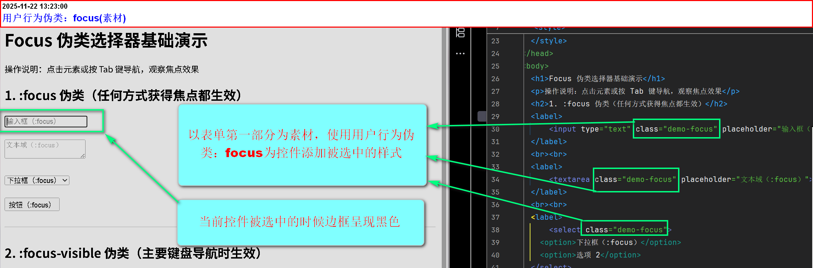
- 演示： 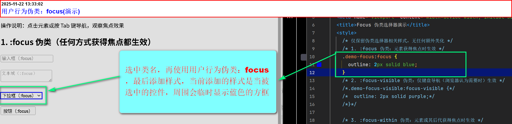
border与outline区别
目录——其他知识补充| 对比维度 | border(边框) | outline(外轮廓) |
| 核心用途 | 元素的【固定样式】(长期存在，作为元素本身的一部分) | 元素的【临时标记】(短期显示，用于状态提示或调试) |
| 空间占用 | 占用布局空间(会影响元素尺寸、挤压相邻元素) | 不占用布局空间(浮于元素之上，不改变页面布局) |
| 样式灵活性 | 高：可单独设置单条边、支持圆角、可设置不同边的样式/颜色 | 底：仅支持全包围元素，无法单独设置单条边，不适配圆角(会超出圆角范围) |
| 视觉表现 | 与元素融为一体，视觉协调，不会重叠其他内容 | 独立用于元素，可能与相邻元素重叠，视觉上会更“突兀”(适合突出提示) |
| 语义暗示 | 表示元素的结构边界(如卡片、按钮的物理边框) | 表示元素的特殊状态(如：焦点、选中、悬浮、调试标记……) |
| 常用场景 | 卡片边框、按钮固定边框、输入框默认边框、导航栏分隔线、盒子的结构边界 | ：focus焦点提示、开发调试标记、：hover/：active临时高亮、选中状态提示 |
| 与其他样式兼容性 | 兼容border-radius(圆角)、box-shadow(阴影)、可与元素样式无缝配合 | 不兼容border-radius(圆角处会显示直角轮廓)，与阴影可能叠加冲突 |
| 无障碍关联 | 无直接关联(仅作样式存在) | 强关联(常用于：focus焦点可视化、帮助键盘用户识别焦点位置、符合无障碍要求) |
| 默认行为 | 元素默认无border(需要手动设置) | 部分元素(按钮、输入框)获焦点时，浏览器会自带默认outline(可通过outline：none取消) |
用户行为伪类：focus-visible
目录——用户行为伪类>语法：selector：focus-visible
定义：仅键盘导航（浏览器认为需要时）生效
- 该用户行为伪类主要在键盘操作是生效(tab键)
- 一样是焦点而非选中
- 也就是说，鼠标操作没有效果
- :focus-visible 能识别按钮、链接这类控件，只是仅在键盘导航（Tab 键）时生效，鼠标点击时不生效（浏览器认为无需提示）
- 演示：
- 素材： 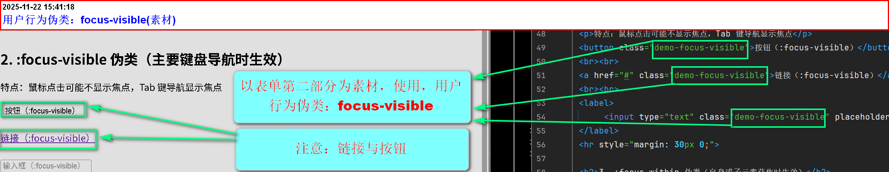
- 演示：
- 与伪类：focus的区别
- 伪类：focus(使用鼠标单击状态)
- 伪类：focus-visible(使用鼠标单击状态)
- 为什么会这样：
- 用「鼠标单击」按钮 / 链接 → 不显示 :focus-visible 样式（浏览器认为 “你知道点了哪里，不需要焦点提示”）
- 用「Tab 键导航」选中按钮 / 链接 → 立刻显示紫色 / 绿色 outline（浏览器认为 “键盘用户需要焦点提示”）
- 总结：
按钮、链接这类 “无法被选中” 的控件，:focus-visible 完全能识别并添加样式 —— 只要通过键盘获得焦点，就会生效
focus 是「只要获焦就显示」，focus-visible 是「需要时才显示」
用户行为伪类：focus-within
目录——用户行为伪类>语法：selector：focus-within
定义：元素或其后代获得焦点时生效
- 注意：
- 后代元素」包括所有层级：不只是直接子元素（比如例子中的 “孙按钮”），只要是嵌套在父元素里的任意层级元素，获焦都能触发
- 父元素自身要能获焦：需要给父元素加 tabindex="0"（让普通容器变成可获焦元素），否则 “父元素自身获焦” 的场景不会生效（比如单纯的 <div class="parent"> 不加点 tabindex，点击它不会获焦）
- 只认「焦点」，不认「选中」：后代元素被 “选中”（比如选中文本）不会触发，只有 “获焦”（输入框、按钮、链接等可操作元素获焦）才会触发
- 演示：
- 素材：
- 演示：
基本选择器补充——属性选择器
-
什么是属性选择器
目录——基础选择器补充——属性选择器属性选择器的本质是：不看类名/ID，只看元素有没有某个属性、或属性值长什么样，就能精准选中它
-
属性选择器(存在匹配)：[attr]
目录——基础选择器补充——属性选择器- 语法：[attr]
- 顾名思义<：只要元素有[attr]这个属性，不管属值是啥，都会被选中
- 最基础的属性选择器，适合"批量选中有[attr]的元素"
- 常见场景：选中所有可点击的链接、所有禁用的表单元素
- [attr]attr可以是任意属性名
-
属性选择器(精准匹配):[attr=value]
目录——基础选择器补充——属性选择器- 语法：[attr=value]
- 顾名思义<：元素必须有[attr]这个属性，且属性值完全等于value(一字不差)，才会被选中
- 匹配规则：大小写敏感(比如type="Text"≠type="text")
- 属性值建议加上引号(单/双都可以)，避免特殊字符出错
- 常见场景：区分不同类型的表单元素(text/password/email)
- [attr]attr可以是任何属性名，value可以是任何属性值
-
属性选择器(开头匹配)：[attr^=value]
目录——基础选择器补充——属性选择器- 语法：[attr^=value]
- 顾名思义：元素有[attr]这个属性,且以指定字符value开头，就会选中
- 就是语法精准匹配(=)前加了符号[^],[^]是"脱字符"
- 常见场景：区分HTTP/HTTPS链接、选中指定文件夹下的资源
- [attr]attr可以是任何属性名，value可以是任何属性值
-
属性选择器(结尾匹配)：[attr$=value]
目录——基础选择器补充——属性选择器- 语法：[attr$=value]
- 顾名思义：元素有[attr]这个属性，且属性以指定字符value结尾，就会被选中
- 就是语法精准匹配(=)前加了符号[$]
- 常见场景：按文件后缀(png/jpg/pdf)区分元素、批量处理同类型资源
- [attr]attr可以是任何属性名，value可以是任何属性值
-
属性选择器(包含匹配)：[attr*=value]
目录——基础选择器补充——属性选择器- 语法：[attr*=value]
- 顾名思义：元素有[attr]这个属性，且属性包含指定字符value(字符可以在任何位置),就会被选中
- 就是语法精准匹配(=)前加了符号[*](相当于模糊搜索)
- 常见场景：批处理含相同关键字的类名/链接，减少重复写样式
- [attr]attr可以是任何属性名，value可以是任何属性值
-
使用属性选择器需要的注意事项
目录- 属性值的引号：建议始终加引号(比如[type="text"])，避免属性值含空格/特殊字符时失效
- 大小写敏感：大部分浏览器中，属性值匹配区分大小写(如[]≠[])
- 优先级：属性选择器优先级=类选择器(.btn)，高于元素选择器，低于ID选择器(#btn)
- 不要过度使用：如果元素已有明确的class/ID,优先用class，属性选择器适合”无类名可复用“的场景。
伪类选择器补充
否定伪类选择器——:not()
目录——伪类选择器补充- 语法：selector:not(){}
- 其中selector为选择器，()内填需要排除掉某个或某类元素
- 作用：排除掉某个或某类元素，选中"除了这些之外的所有元素"
- 注意事项：
- 括号里只能放基本选择器(如类、ID、元素选择器)
- 不能嵌套:not()[比如p:not(:not(.a))是无效的]
- 优先级和它排除的选择器相同[比如p:not(.selector)的优先级=p .section的优先级]
结构伪类——：root{}
目录——结构伪类- 语法：root{}(一般不会再前面添加selector)
- 定义：匹配文档的根元素(html中通常是<html>标签)，常用于定义全局CSS变量(自定义属性)，方便统一管理样式
- 注意事项：
- :root 是定义全局 CSS 自定义属性（变量） 的最佳载体，其作用域覆盖整个文档，所有元素均可访问这些变量
- :root 唯一匹配 HTML 根元素 <html>，优先级高于普通元素选择器
- 核心用途是定义全局 CSS 变量，推荐单独使用，禁止冗余组合
- 相同样式下，:root 会覆盖<html> 的样式，开发中需注意优先级冲突
- 变量名区分大小写（--main-color 和 --Main-Color 是两个不同变量）
- 可通过 var(变量名, 默认值) 设置兜底默认值，避免变量未定义时样式异常
- 不要滥用 :root 设置非全局样式： :root 适合定义全局通用样式（如变量、全局滚动行为、全局字体），不适合设置局部元素样式（如某个 div 的边距），否则会增加维护成本
-
- 结构伪类——root演示
- 素材：
- 演示：
目标伪类——：target{}
目录——目标伪类表单专属伪类选择器
顾名思义：专门用于美化或控制表单元素状态的伪类
表单专属伪类——checked
目录——表单专属伪类选择器- 语法：selector:checked{}
- 定义：匹配被选中的表单元素(仅适用于input[type="checkbox"],input[type="radio"]和<option>)
- 注意：
- 仅对单选框、复选框、下拉选项生效。
- 常用于配合label实现选中状态的样式变化
- 显示效果就是：它们被选中时触发被写入的样式
-
- 素材：
- 演示：
表单专属伪类——disabled
目录——表单专属伪类选择器- 语法：selector:disabled{}
- 定义：匹配处于禁用状态的表单元素(添加添加了disable属性的元素)
- 注意事项：
- 禁用元素通常无法交互(点击、输入等),浏览器默认会降低其可见性
- 使用元素：input、button、select、textarea等
-
- 素材：
- 演示：
表单专属伪类——enabled
目录——表单专属伪类选择器- 语法：selector:enabled{}
- 定义：匹配处于可用状态的表单元素(未添加disabled属性的元素，默认状态)
- 注意事项：
- 与:disabled互为反状态，几乎所有表单元素默认都处于:enabled状态
-
- 素材：
- 演示：
表单专属伪类——required
目录——表单专属伪类选择器- 语法：selector:required{}
- 定义：匹配带有required属性的表单元素(必填项)
- 注意事项：
- 常用于标记必填字段，提示用户必须填写
- 适用元素：input、select、textarea等
-
- 素材：
- 演示：
表单专属伪类——optional
目录——表单专属伪类选择器- 语法：selector:optional{}
- 定义：匹配未带有required属性的表单元素(可选项、默认状态)
- 注意事项：
- 与required互为反状态，未设置required的表单元素默认匹配此选择器
-
- 素材：
- 演示：
表单专属伪类——valid
目录——表单专属伪类选择器- 语法：selector:valid{}
- 定义：匹配通过表单验证的元素(符合验证规则的有效输入)
- 注意事项;
- 依赖表单验证规则(如：type=“email”、pattern、min/max等)
- 仅在用户输入或表单提交时触发验证状态变化
-
- 素材：
- 注意：
- 演示：
表单专属伪类——invalid
- 语法：selector:invalid{}
- 定义：匹配为通过表单验证的元素(不符合验证规则的无效输入)
- 注意事项：
- 初始状态下，空的必填字段(required)可能被视为(:invalid)
- 避免在用户未输入时过早显示错误样式(可配合:user-invalid优化体验，部分浏览器支持)
-
- 素材：
- 演示：
表单专属伪类——in-range与out-of-range
目录——表单专属伪类选择器表单专属伪类——in-range
目录——表单专属伪类选择器- 语法：selector:in-range{}
- 定义：匹配输入值在min和max范围内的表单元素(仅适用于有范围限制的输入，如type="number")
- 注意事项：
- 必须配合min和max属性使用，否则无效
- 适用元素：input[type="number"]、input[type="range"]等
表单专属伪类——out-of-range
目录——表单专属伪类选择器- 语法：selector:out-of-range{}
- 定义：匹配输入值超出min和max范围的表单元素(与：in-range相反)
- 注意事项：
- 必须配合min和max属性使用，否则无效
- 适用元素：input[type="number"]、input[type="range"]等
- 表格专属伪类：in-range和ou-of-range演示
- 素材：
- 演示：
表单专属伪类——read-only与read-write
目录——表单专属伪类选择器表单专属伪类——read-only
目录——表单专属伪类选择器- 语法：selector:read-only{}
- 定义：匹配处于只读状态的元素(添加了readonly属性，或本身不可编辑的元素)
- 注意事项：
- 只读元素可选中但不可修改内容(与disabled不同，readonly元素的值会随表单提交)
- 适用元素：input、textarea
表单专属伪类——read-write
目录——表单专属伪类选择器- 语法：selector:read-write{}
- 定义：匹配可编辑的元素怒(未添加readonly且未禁用的元素)
- 注意事项：
- 与：read-only互为反状态，默认情况下可编辑的表单元素均匹配此选择器
- 表单专属伪类：read-only和read-write演示
- 素材：
- 演示：

表单专属伪类：placeholder-shown
目录——表单专属伪类选择器- 语法：selector:placeholder-shown
- 定义：选中当前正在显示占位符文本(placeholder属性值)的表单元素
- 注意事项：
- 生效的两个条件
- 元素设置了 placeholder 属性（如 <input placeholder="请输入..."> 或 <textarea placeholder="请输入...">）
- 元素处于 “未输入状态”，即用户未输入任何内容，占位符文本可见。
- 触发时机：当用户未输入内容时，占位符显示 → 匹配 :placeholder-shown；
当用户开始输入（即使输入后删除内容，只要占位符消失）→ 不再匹配 :placeholder-shown - 适用元素：仅支持带有 placeholder 属性的表单元素，如 <input>（type 为 text、search、url 等）和 <textarea>
- 一般于伪类：（invalid、valid、in-range、out-of-range）搭配适用
- 生效的两个条件
-
- 素材：
- 演示：
选择器的优先级：
目录——选择器的优先级-
css中，权重用数字衡量
- 元素选择器的权重为：1
- class选择器的权重为：10
- id选择器的权重为：100
- 内联选择器的权重为：1000
- 综上所述(排名)：行内样式>ID选择器>类选择器>元素选择器